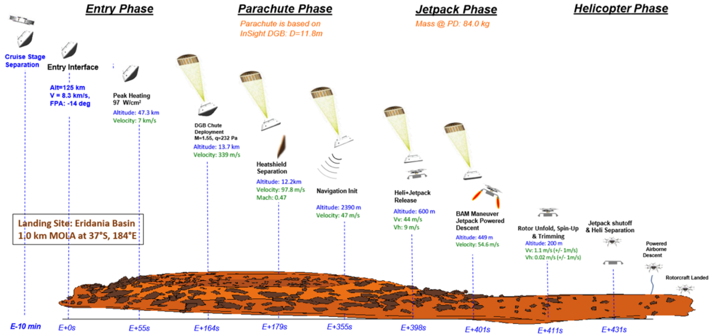
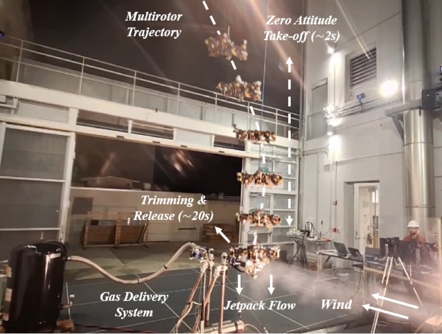

Mid-Air Helicopter Deployment: validating the takeoff transition
This page covers the concept and motivation only. The experimental results are part of a journal article currently under review, so no measurements, figures or findings from it appear here. What follows is the context: what MAHD is, why the takeoff transition is the hard part, and why it has to be tested rather than simulated.
The problem MAHD solves
Mars rotorcraft are getting bigger. Ingenuity proved powered flight on Mars is possible; the proposals that follow it are far more capable — the Mars Chopper concept is about the size of an SUV, with six rotors of six blades each, carrying 5 kg of science payload up to 3 km per sol.
That capability creates a delivery problem. Conventional surface-delivery architectures — a sky crane, as used for Curiosity and Perseverance — impose serious packaging, mass and performance penalties on a vehicle that large. The alternative is a helicopter-only mission architecture, where the rotorcraft performs its own terminal landing, transitioning from parachute-supported descent to rotorborne flight before it reaches the surface.
Doing that directly is hard. Going from high parachute descent rates to stable rotorborne flight demands aggressive recovery manoeuvres and exposes the rotors to unfavourable descent aerodynamics, including vortex ring state. Mid-Air Helicopter Deployment avoids this: a lightweight jetpack attached beneath the rotorcraft fires retro-rockets after backshell separation, decelerating the vehicle into near-hover conditions inside the rotorcraft’s own flight envelope. Only then do the rotors spin up, the helicopter transitions to rotorborne flight, and the jetpack — its job done — is jettisoned.
The payoff is that it preserves rotor size and payload capability while keeping the vehicle out of the aerodynamic regimes that make direct transition dangerous.

The critical moment
The event this work targets is the handover: the moment the rotorcraft stops being carried and starts flying. Just before release, the vehicle is producing positive net thrust while still mechanically restrained to a jetpack platform that is providing attitude control and station keeping. Several things act on it at once:
- Crosswind and gusts impose airloads on a restrained vehicle.
- Pulsed jetpack thrusters degrade rotor performance through ambient entrainment.
- Structural vibration travels through the interface into the avionics.
Together these leave residual forces and moments at the rotorcraft–jetpack interface, biasing the vehicle state at the instant of separation. The consequences show up immediately afterwards as attitude excursions, lateral drift, or the risk of re-contact with the jetpack in the first instants of free flight.
That motivates an airload-aware takeoff: use force and torque measurements taken before release to trim the rotorcraft to a prescribed thrust-to-weight ratio and a near-zero moment condition, so it separates from a known, balanced state rather than an arbitrary one.
Why it has to be tested
Aerodynamic interaction, sensing, control and vehicle dynamics are coupled here, which makes the transition difficult to assess from static airload measurements or simulation alone. Validation for planetary rotorcraft programmes has traditionally relied on specialised facilities that reproduce selected environmental drivers — atmospheric density, gravity loading, wind, rotor operating state. Those facilities are essential for anchoring models, but they are costly, volume-limited, slow to iterate, and often restricted to static or restrained configurations. Those constraints are precisely what make them a poor fit for an integrated transient event like MAHD.

This study takes the opposite approach: evaluate the coupled release dynamics in Earth-ambient sub-scale testing, trading environmental fidelity for the ability to run a full, dynamic, repeatable takeoff sequence. The testbed preserves the quantities that matter most to release and early takeoff — a 20% powered rotorcraft model, a nitrogen cold-gas jetpack analogue reproducing the jetpack’s aerodynamic effects and vibration, and a large open-circuit wind tunnel.
On top of that sits a fully autonomous, airload-aware takeoff pipeline: the restrained rotorcraft spins up, trims thrust and moments against the measured loads, separates from the jetpack platform, and transitions to stable hover — all under wind and jetpack disturbance.
Background
The MAHD concept was developed at NASA JPL, where I worked on the experimental characterisation of Mars Science Helicopter takeoff performance from a jetpack during my master’s thesis. The earlier risk-reduction campaign is summarised in the MAHD SRTD poster, and the position itself on my experience page.